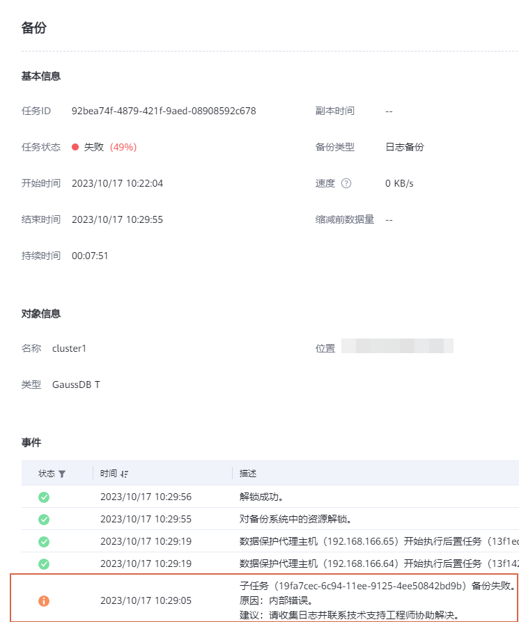
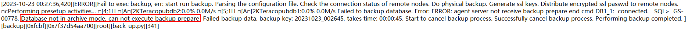

执行GaussDB T的备份操作时，任务失败，OceanProtect管理界面的任务详情中显示为“内部错误”。从报错的客户端所在主机获取所有节点的“gaussdbt_plugin.log”日志文件，可查询到日志报错信息，日志信息示例图如下。

GaussDB T数据库未运行在ARCHIVELOG模式，导致数据库状态为降级，备份失败。
请参见步骤2：设置Redo日志模式，设置Redo日志模式为ARCHIVELOG模式。